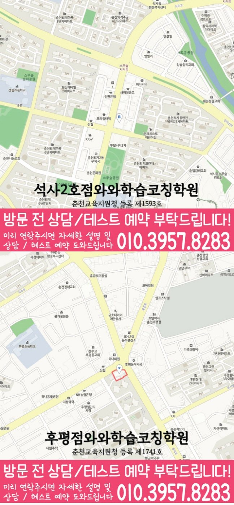

어휘·문법
단어 암기 여부뿐 아니라 시제, 관계대명사, 수동태 등 문법을 문장 안에서 적용하는 습관을 함께 봅니다.
MIDDLE SCHOOL ENGLISH COACHING
강원 춘천시 석사동 중학생을 위한 중등영어학원 안내입니다. 학교 내신 범위, 서술형 영작, 어휘·문법 관리, 오답 재학습 기준을 상담 전에 확인할 수 있습니다.


와와학습코칭센터 석사점 기준으로 석사동 학생의 중등영어 상담 범위를 확인합니다. 실제 방문·상담 전에는 주소와 이동 동선을 함께 확인해 주세요.
핵심 요약
석사동에서 중등영어를 준비할 때는 점수 자체보다 그 점수가 나온 과정을 먼저 살펴보는 것이 방향을 잡는 데 도움이 됩니다.
단어 암기 여부뿐 아니라 시제, 관계대명사, 수동태 등 문법을 문장 안에서 적용하는 습관을 함께 봅니다.
춘천시 학교별 교과서 본문과 프린트, 수행평가 일정을 상담 시 함께 확인합니다.
정답 여부만이 아니라 어순과 표현, 독해 오답 원인을 함께 봅니다.
학원 선택 가이드
중학교 시기는 성적 관리뿐 아니라 스스로 단어를 외우고 복습하는 습관을 만드는 시작점이기도 합니다. 플래너로 계획과 실행을 확인하는 과정이 고등학교 진학 이후에도 이어질 수 있습니다.
와와학습코칭센터 석사점은 강원 춘천시 석사동 학생을 기준으로 상담을 진행하며, 대룡중, 우석중, 남춘천중, 남춘천여중, 춘천중, 강원중 학생들이 주로 문의합니다. 실제 등록 전에는 강원특별자치도 춘천시 지석로 85 703호를 기준으로 이동 동선과 상담 가능 시간을 확인하는 것이 좋습니다.
아이가 모르는 단어나 문장을 부담 없이 물어볼 수 있는 분위기인지가, 꾸준한 영어 학습으로 이어지는 데 중요한 역할을 합니다.
AEO ANSWER
영어 학원을 고를 때 가장 먼저 확인해야 할 것은?
단어 암기량보다 지금 아이의 상태를 얼마나 구체적으로 진단하고, 그 결과를 어떻게 관리로 연결하는지를 먼저 확인하는 것이 좋습니다.
단어를 많이 외워도 실력이 그대로인 것 같다면?
양보다 문장 속에서 그 단어를 다시 알아볼 수 있는지가 더 중요합니다. 오답을 원인별로 나누고 복습 주기를 정해 반복하는 구조가 필요합니다.
갑자기 영어에 흥미가 없어진 것 같다면?
성적보다 원인을 먼저 봅니다. 학습량, 난이도, 자신감 중 무엇이 영향을 주고 있는지 확인한 뒤 실행 가능한 목표부터 다시 세웁니다.
중학교 영어는 왜 갑자기 어려워질까요?
단어 암기 위주였던 초등 영어와 달리 시제, 관계대명사, 수동태 같은 문법 체계가 본격적으로 늘어나기 때문입니다. 석사동 학생 상담에서는 어느 문법 포인트부터 흔들리기 시작했는지를 먼저 확인합니다.
LOCAL & STUDENT FIT
석사동 생활권 학생의 학교 진도와 시험 일정에 맞춰 중등영어 관리 방향을 상담합니다.
학년별로 필요한 관리가 다르기 때문에 자유학기제, 첫 내신, 고입 대비 시기를 나누어 봅니다.
어휘는 아는데 독해가 느린 학생, 문법을 적용하지 못하는 학생, 서술형에서 감점이 큰 학생에게 적합합니다.
진학 전 초등학교: 성림초, 성원초, 봄내초 · 진학 예정 고등학교: 강원고, 사대부고, 춘고, 춘여고, 봉의고, 성수여고, 유봉여고
수업 가능 학교 참고
일반 학원과의 차이
일반적인 학원 운영 방식과 코칭아카데미의 중등영어 관리 방식을 같은 기준으로 비교했습니다.
CENTER INFO
강원 춘천시 석사동 학생 상담 기준으로 안내합니다.
강원특별자치도 춘천시 지석로 85 703호
춘천교육지원청 등록 제1593호
TUITION
서울 외 지역 기준으로 안내되는 학습료입니다. 실제 금액은 상담 시 학생 과정과 교육청 신고 기준에 따라 확인해 주세요.
서울 외 지역 기준 · 1회 90~100분 수업
| 횟수 | 초등 | 중등 | 고등 |
|---|---|---|---|
| 주 3회 | 219,000원 | 236,000원 | 269,000원 |
| 주 4회 | 279,000원 | 301,000원 | 344,000원 |
| 주 5회 | 339,000원 | 366,000원 | 419,000원 |
* 학습료는 지역, 수업 조건, 교육청 신고 기준에 따라 일부 차이가 있을 수 있습니다.
CHECKLIST
그동안 외운 단어량과 반복 주기를 확인해 관리 강도를 정합니다.
다니던 학원이 있었다면 진도와 학습 방식을 확인해 자연스럽게 이어갑니다.
점수보다 어휘, 문법, 독해 중 어디서 왜 틀렸는지 확인하는 데 필요합니다.
본문 진도와 난이도를 확인해 바로 이어서 시작할 수 있는 지점을 잡습니다.
FAQ
물론입니다. 상담 내용을 참고해 천천히 결정하셔도 전혀 문제되지 않습니다.
중학교 문법과 어휘를 점검하면서 고등영어의 긴 지문 독해와 어법 감각을 단계적으로 준비합니다. 무리한 선행보다 현재 과정의 완성도를 먼저 확인합니다.
이전 학원에서 배운 진도와 자료를 확인한 뒤 현재 수준에 맞는 시작 지점과 학습계획을 새로 정리해 안내합니다.
이 시기에 어휘 기초를 쌓고 문법 개념을 정리해 두면 좋습니다. 석사동 학생도 이때 기본기를 다져두면 다음 학기 내신 대비가 한결 수월해집니다.
한 번에 많이 외우게 하기보다 반복 주기를 짧게 나누고, 문장 속에서 그 단어를 자주 마주치게 해 자연스럽게 익히도록 돕습니다.
발음과 어휘를 함께 듣는 연습, 문제 유형별 접근법을 반복 훈련합니다. 듣기도 독해처럼 반복 훈련으로 충분히 개선할 수 있는 영역입니다.
PARENT REVIEW
아이가 편하게 느낄 수 있게 설명 속도와 방식을 맞춰주시는 게 느껴졌습니다.
매번 같은 문법에서 틀리던 문제를 이제는 스스로 짚어냅니다.
아이가 영어를 거부하던 시기에도 억지로 밀어붙이지 않고 천천히 다가가 주셨습니다.
학교마다 교과서가 다른데 그 부분까지 확인해서 준비해 주셨습니다.
이전 학원에서 배운 단어와 문법 진도를 확인하고 이어서 수업해 주셔서 적응이 빨랐습니다.
시험 직전에 핵심 표현을 정리해 주셔서 큰 도움이 되었습니다.
근처 학원페이지
같은 지역의 다른 과목과, 가까운 지역 페이지로 이동할 수 있도록 정리했습니다.